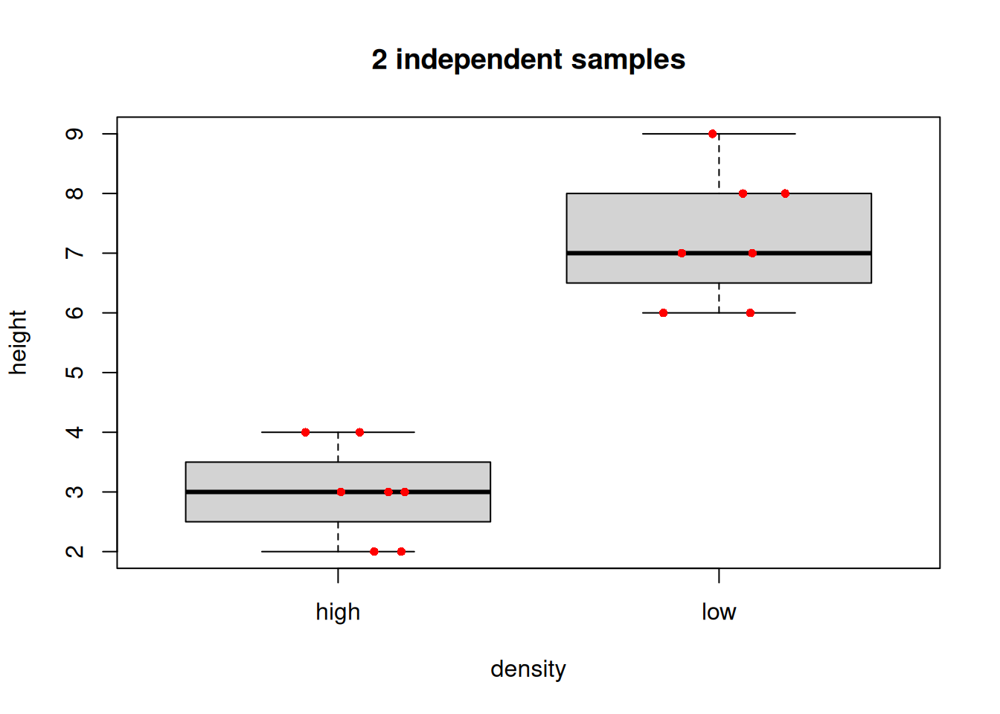

The t-test and t-distribution are widely considered to be at the very foundation of modern statistic science and they form an important foundation for the practice of statistics. Who would believe they were invented to make great beer better?
William Sealy Gosset is credited with inventing and applying the idea of the t-test to assist in scientific quality control while working for the Guinness brewery. The idea was refined and supported by the great statistician R. A. Fisher, and the idea was initially described in a paper anonymously by “Student”, in order to protect the commercial interests of Guinness. Today, it is perhaps one of the most prevalent and basic tools in statistics, and it is a fascinating story.
Here, we will briefly look at the practical basis of the t-test before going on the look at different ways it can be applied to data.
2 The question of the t-test
There are three common versions of the t-test.
The typical premise of the t-test is that it is used to compare populations you are interested in, which you measure with independent samples. There are a few versions of the basic question.
2.1 2 independent samples
Here you have measured a numeric variable and have two samples. The question is: are the means of the two samples different (i.e. did the samples come from different populations)? A typical design here might be an experiment with a control and one treatment group. Another more general design might be a sample taken under one defined condition, is compared to a sample taken under a different condition.
The data could be summarized in two different ways. The “long format” way would be to have a vector with the measured variable, and another vector that is a factor with 2 levels defining the two sample conditions (one numeric vector, one factor vector).
## 2 sample t-test long format datadensity<-c(rep('high', 7), rep('low', 7))height<-c(2,3,4,3,4,3,2,6,8,6,9,7,8,7)(long.data<-data.frame(density,height))
density height
1 high 2
2 high 3
3 high 4
4 high 3
5 high 4
6 high 3
7 high 2
8 low 6
9 low 8
10 low 6
11 low 9
12 low 7
13 low 8
14 low 7
The “wide format” way would be to have a different numeric column for each of the samples (2 numeric vectors).
## 2 sample t-test wide format data(wide.data<-data.frame(high.ht =c(2,3,4,3,4,3,2), low.ht =c(6,8,6,9,7,8,7)))
A typical graph representing data like this, would be a boxplot(). Optionally, to be maximally informative, one can add the raw data as points over the box summaries.
# Boxplotboxplot(height~density, data =long.data, main ="2 independent samples")# Optional: add raw data points# jitter() nudges the x-axis placement so that the points do not overlapset.seed(42)points(x =jitter(c(1,1,1,1,1,1,1,2,2,2,2,2,2,2), amount =.2), y =long.data$height, col ="red", pch =16, cex =.8)# Mere vanity

2.2 Compare 1 sample to a known mean
Here you have one sample which you wish to compare to a mean value. The basic question is did the sample come from a population exhibiting the known mean?
The data are simply a single numeric vector, and the population mean for comparison.`
# The datamysam<-c(2.06, 1.77, 1.9, 1.94, 1.91, 1.83, 2.08, 1.84, 2.15, 1.84, 2.05, 2.19, 1.64, 1.81, 1.83)boxplot(mysam, main ="Is your sample population different from the dashed line?")points(x =jitter(rep(1,15), amount =.1), y =mysam, col ="red", pch =16, cex =.8)# Mere vanityabline(h =2.0, col ="blue", lty =2, lwd =2)# Mere vanity
2.3 Paired samples
This is a third kind of t-test question. Here the individual observation comprising the 2 samples are not independent. A typical example might be the measurement of some variable before and after a treatment (e.g. measure crop yield in plots in a field before and after a soil treatment in successive years); another classic example would be measuring plots that are paired spatially (e.g., plots are chosen and within each plot a treatment and untreated measurement is made.).
For each of these examples, there is a unit, patient, or plot identification, that represents the relationship of each paired measure.
2.4 Plotting paired samples
# Biochar application, measure N before and after# Data # (the code are kind of ugly, but run it to "make" biochar)biochar<-structure(list( plot =c("A", "B", "C", "D", "E", "F", "G", "H", "I", "J", "K", "L", "M", "N", "O"), N.first =c(13.4, 16.7, 17.9, 18.5, 18.6, 18.6, 18.7, 20.5, 20.6, 21.5, 24.2, 24.5, 25, 27.1, 28.1), N.second =c(16, 16.7, 18.7, 18.7, 22.1, 22.7, 23.1, 23.1, 23.2, 23.5, 25.4, 25.9, 27.6, 28, 29.7)), class ="data.frame", row.names =c(NA, -15L))biochar
plot N.first N.second
1 A 13.4 16.0
2 B 16.7 16.7
3 C 17.9 18.7
4 D 18.5 18.7
5 E 18.6 22.1
6 F 18.6 22.7
7 G 18.7 23.1
8 H 20.5 23.1
9 I 20.6 23.2
10 J 21.5 23.5
11 K 24.2 25.4
12 L 24.5 25.9
13 M 25.0 27.6
14 N 27.1 28.0
15 O 28.1 29.7
# boxplot() would work, but hides pairwise relationship# Try this:plot(x =jitter(c(rep(1,15), rep(2,15)),amount =.02), y =c(biochar$N.first, biochar$N.second), xaxt ="n", xlim =c(0.5, 2.5), cex =.8, col ="blue", pch =16, # Mere vanity xlab ="Biochar treatment", ylab ="Soil N", main ="Do the lines tend to increase?")mtext(side =1, at =1:2, text =c("before", "after"), line =1)# Get crazy: add horizontal lines to visualize the plot pairsfor(iin1:15){lines(x =c(1.05,1.95), y =c(biochar$N.first[i], biochar$N.second[i]), lty =2, lwd =1, col ="red")# Mere vanity}
3 Data and assumptions
The principle assumptions of the t-test are:
Gaussian distribution of observations WITHIN each sample
Heteroscedasticity (our old friend) - i.e., the variance is equal in each sample
Independence of observations
3.1 Evaluating and testing the assumptions
The t-test is thought to be somewhat robust to violation of assumptions. For example, if the assumptions of Gaussian distribution and heteroscedasticiy are violated (a little), it is not likely to greatly bias your results. The assumption of independence of observations is always of high importance.
If in doubt about using your personal subjective judgement, based on your personal data analysis experience, it is always best to fully evaluate the evidence whether assumptions have been violated for parametric statistics tests with formal testing.
3.2 Gaussian distribution of observations WITHIN each sample
We would typically first test the assumption of Gaussian distribution using graphical evaluation with, for examples, a histogram (hist()) and a q-q plot (e.g., with qqplot()), possibly along with a statistical test evaluating whether data are Gaussian (e.g., shapiro.test().
NB 1 the assumption of Gaussian does not apply to to ALL OBSERVATIONS TOGETHER for both samples of a two sample t-test, but applies TO EACH SAMPLE SEPARATELY (this is sometimes confusing for beginners). The reason for this is that the very nature of the two sample t-test hypothesizes that the two samples come from DIFFERENT POPULATIONS, but that each population adheres to the Gaussian distribution.
NB 2 testing whether each sample is Gaussian is analogous to testing whether the residuals are Gaussian for regression.
The following code explores the ideas here further.
# First make some data as an example.# This is height in cm data measured from 30 females and 30 males# NB because we simulate this data, we literally specify the # samples are indeed from DIFFERENT, GAUSSIAN populations.# Obviously in a real sampling situation you would not know this,# hence we will test it formally.set.seed(1)height<-c(rnorm(30,185,10),rnorm(30,150,10))sex<-c('m','m','m','m','m','m','m','m','m','m','m','m','m','m','m','m','m','m','m','m','m','m','m','m','m','m','m','m','m','m','f','f','f','f','f','f','f','f','f','f','f','f','f','f','f','f','f','f','f','f','f','f','f','f','f','f','f','f','f','f')# Package the variables we made into a data frame# and remove the variables outside the dataframe to # keep our global environment tidy (not required, but satisfying!)data<-data.frame(height,sex)rm(height, sex)# plot raw datahist(x =data$height, main ='Height ignoring sex', xlab ='Height (cm)', freq =F)# Draw expected Gaussian# Draw overall mean and the means# for each level of sexabline(v =c(mean(data$height), # mean overallmean(data$height[data$sex=='f']), # mean fmean(data$height[data$sex=='m'])), # mean m lty =c(1,2,2), # line types for each lwd =3, # line width for all 3 col =c("black", "red", "blue"))# colour for each# Draw expected Gaussian density curvemv<-data$height# generalizes following codexcoord<-seq(min(mv), # make x coordinatesmax(mv), length =length(mv))ycoord<-dnorm(x =xcoord, # make y coordinates mean =mean(mv), sd =sd(mv))lines(x =xcoord, y =ycoord, # draw curve col ='darkgreen', lwd =3)# for clarity here, add on some labels...text(x =155, y =.01, labels ="f\nmean", col ="red")text(x =182, y =.011, labels ="m\nmean", col ="blue")text(x =172.1, y =.015, labels ="grand\nmean")text(x =140, y =.012, labels ="Gaussian\ndensity", col ="darkgreen")
Note the gray bars on the histogram have two peaks, and is terribly non-Gaussian looking. Also note the data does not look similar to Gaussian! To emphasize the point, we do not even expect these height measures to come from the same population (in fact our hypothesis is that they do not), therefore we do not expect the WHOLE vector of data to be Gaussian.
We could further formally test this of course, with a quantile-quantile (“qq”) plot, and perhaps a statistical test of Gaussian like the Shapiro Test.
qqnorm(data$height, main ="Q-Q Gaussian line for our Height data")qqline(data$height)
Notice the q-q plot shows divergences from the Gaussian expected line at both ends and in the middle! Compare this to our histogram and expected density curve above.
The Shapiro Test will confirm that these data are not Gaussian.
Shapiro-Wilk normality test
data: data$height
W = 0.91918, p-value = 0.0007111
So testing formally, we find that our data are different to the expected Gaussian (W = 0.92, n = 60, p = 0.0007).
3.3 Properly testing Gaussian for the two sample t-test
To properly test the assumption of Gaussian for a 2 sample t-test, you would test the assumption separately for each group. Here is an example that uses graphs and the Shapiro test:
# step 1 graph a hist() of the continuous variable# separately for each factor levelpar(mfrow =c(2,1))# set so hist's "stack"# draw males histhist(data$height[data$sex=='m'], # select males xlim =c(min(data$height), max(data$height)), # set limit for ALL data col ="blue", freq =F, xlab ="Height (cm)", main ="Males")mv<-data$height[data$sex=='m']xcoord<-seq(min(mv), # make x coordinatesmax(mv), length =length(mv))ycoord<-dnorm(x =xcoord, # make y coordinates mean =mean(mv), sd =sd(mv))lines(x =xcoord, y =ycoord, # draw curve col ='lightblue', lwd =3)# draw females histhist(data$height[data$sex=='f'], # select females xlim =c(min(data$height), max(data$height)), # set limit for ALL data col ="red", freq =F, xlab ="Height (cm)", main ="Females")mv<-data$height[data$sex=='f']xcoord<-seq(min(mv), # make x coordinatesmax(mv), length =length(mv))ycoord<-dnorm(x =xcoord, # make y coordinates mean =mean(mv), sd =sd(mv))lines(x =xcoord, y =ycoord, # draw curve col ='pink', lwd =3)
You can really see the difference here and each respective population seems to conform relatively closely to Gaussian (allowing for sampling error). This is EXACTLY what we would expect for morphological data.
Now we can make q-q plots and formally test the distributions with the Shapiro Test.
First we graphically examine the distributions:
## QQ Plotspar(mfrow =c(1,2))# malesqqnorm(data$height[data$sex=='m'], main ="Q-Q Gaussian line for male height")qqline(data$height[data$sex=='m'])# femalesqqnorm(data$height[data$sex=='f'], main ="Q-Q Gaussian line for female height")qqline(data$height[data$sex=='f'])
Shapiro-Wilk normality test
data: data$height[data$sex == "f"]
W = 0.98568, p-value = 0.9482
The Shapiro test for Gaussian showed that neither sample of height data for each respective sex deviates significantly from Gaussian (males: W = 0.95, n = 30, p = 0.17; females: W = 0.99, n = 30, p = 0.95).
If the Gaussian assumption cannot be met reasonably with the data, a common alternative that does not require it is the Mann-Whitney U-test, also known by the name Wilcoxon Test (which we will look at below).
3.4 Heteroscedasticity assumption
We would typically examine the variance graphically or through calculation and comparison of descriptive statistics, although a formal test (e.g. using var.test()) is possible. However, in the case of the 2 sample t-test, there exist methods to “pool” the standard deviation if variances are not equal. Thus, if pooled SD is used and the 2 sample t-test is conducted assuming unequal variances (NB this is the default setting in the base R t.test()), it is not necessary to test this assumption for the specific case of the 2 sample t-test (but still may be interesting to be aware of as a feature of your data).
3.5 Independence assumption
The assumption of independence of data is extremely important and related to making an INFERENCE on a POPULATION of interest via SAMPLING one or more populations of interest. If for example pairs of observations are not independent, an alternative test would be appropriate, like the Paired t-test.
We have already examined the most common cases for data, data arrangement and types of questions that fit the t-test. The principle graph types are simple:
2 independent samples - Boxplot or similar graph, showing the central tendency of the data and making it easy to visually compare the two samples.
1 sample - Again, boxplot or similar showing the variation of the single sample. Indicating the population mean as a reference is useful.
2 paired samples - A boxplot is second best to a graph that indicates the tendency for change between the paired observations.
5 Examples of the t-test and alternatives
We will cover four examples here looking at the t-test variants and alternatives when assumptions are not met:
t-test for 2 independent samples
1 sample t-test
2 paired samples
Mann-Whitney U-test
5.1 t-test for 2 independent samples
The example we will use here is the amount of tree growth over a period of time, where samples were taken of individual trees grown under two conditions - high density of trees versus low density. The hypothesis we are testing is whether there is evidence the samples came from different populations (by inference, we are possibly interested in whether there is an effect of density on growth). The data we will use is similar to the long.data from above.
# The histograms are a little "wooly", but there are no huge # deviations from the expectation of Gaussian and the # q-q plots look ok: proceed# ?t.test# NB 1 - the x argument can be a formula# x = height ~ density# or we can set our samples to x and y respectively# x = height[low], y = height[high]t.test(formula =height~density, data =treegrowth)
Welch Two Sample t-test
data: height by density
t = -8.6257, df = 11.868, p-value = 1.865e-06
alternative hypothesis: true difference in means between group high and group low is not equal to 0
95 percent confidence interval:
-5.190611 -3.095103
sample estimates:
mean in group high mean in group low
3.428571 7.571429
# Flash challenge: Make a good graph of the data
There are a few points in the output.
The main test statistic is the “t value”, which can be be positive or negative (depending on which sample is larger on average); the absolute value of t should increase with the probability that the samples came different populations.
The degrees of freedom, df, is adjusted to account for differences in sample variance thought of as a way to quantify the overall difference
The 95% confidence interval is an estimation of the true mean difference between populations from which the samples were taken.
The P-value
Here, we might report our results in the technical style as follows (remember ALWAYS the test performed: the test statistic, the degrees of freedom or sample size, the P-Value):
We detected a significant difference between mean height for tree grown at high or low density (2-sample t-test: t = -8.63, df = 11.9, P < 0.0001).
5.2 1 sample t-test
The example is a sample of earwigs measured in length to the nearest 0.1 mm. There is a hypothesis that global warming has impacted the development in the population and they are getting larger. A long term dataset has established a mean earwig length of 17.0 (NB, this is our estimate of “mu”, \(\mu\), the population mean we will compare our sample to). Are the earwigs getting bigger?
# Try this:# Dataearwigs<-c(22.1, 16.3, 19.1, 19.9, 19.2, 17.7, 22.5, 17.7, 24.1, 17.8, 21.9, 24.9, 13.8, 17.2, 17.6, 19.9, 17.1, 10, 10.7, 22)# Flash Challenge: Assess this data for adherence to the Gaussian assumptionmymu<-17.0# Our mu# ?t.test #notice the mu argumentt.test(x =earwigs, mu =mymu)
One Sample t-test
data: earwigs
t = 1.7845, df = 19, p-value = 0.09031
alternative hypothesis: true mean is not equal to 17
95 percent confidence interval:
16.72775 20.42225
sample estimates:
mean of x
18.575
# Flash challenge: Make a great graph representing this test
We found no evidence the mean length of earwigs in our sample was different to the historical mean (1-sample t-test: t = 1.78, df = 19, P-value = 0.09).
5.3 2 paired samples
The example here is a measure of the hormone cortisol in pregnant cows (related to stress in mammals). A measure was taken in each individual twice; once as a baseline measure, and once after a treatment of soothing music being played to the cows for 3 hours per day. The prediction is that the mean level of cortisol will decrease relative to baseline after experiencing the music treatment.
Paired t-test
data: cort.t0 and cort.t1
t = -3.7324, df = 19, p-value = 0.001412
alternative hypothesis: true mean difference is not equal to 0
95 percent confidence interval:
-0.31605728 -0.08894272
sample estimates:
mean difference
-0.2025
# Flash Challenge:# 1) Make a great graph that represents these data# 2) do the data conform to the assumptions?# 3) Was your hypothesis upheld...?# 4) format and report the results in the technical style!
5.4 Mann-Whitney U-test
The Mann-Whitney U-test (wilcox.test() in R, don’t ask why…) is an alternative to the t-test when your data cannot achieve the assumptions for the t-test. The t-test is robust, especially when sample size is large, or the deviation from assumptions is similar for both samples. However, when sample size is not very large (e.g. ~30 per sample or less), and there is skew or the samples are dissimilar, the Mann-Whitney U-test is a good choice. Two sample and one sample methods exist.
The example here is chicken egg count for a control, and a +bonemeal diet.
par(mfrow =c(1,1))# ?wilcox.testwilcox.test(x =diet, y =diet.bone)
Warning in wilcox.test.default(x = diet, y = diet.bone): cannot compute exact
p-value with ties
Wilcoxon rank sum test with continuity correction
data: diet and diet.bone
W = 63.5, p-value = 0.0374
alternative hypothesis: true location shift is not equal to 0
Don’t forget to make a good graph of the data.
boxplot(diet, diet.bone, ylab ='Egg count')points(x=jitter(rep(1,15), 4), y =diet, col ='red', pch =16)# pure vanitypoints(x=jitter(rep(2,15), 2), y =diet.bone, col ='red', pch =16)# pure vanity
# Flash challenge: make this graph better!
We found evidence of a difference in the number of eggs lain under a control diet and a a diet supplemeted with bone meal (Mann-Whitney U-test: W = 63.5, n = [15, 15], P = 0.037) )
6 Practice exercises
For the following exercises, use the dataset in the file 11-Davis.xlsx. The dataset is in tidy format; take advantage of this by looking at the terse information present in the data dictionary tab. The data are a result of a survey of some university students, who were asked to report their height and weight, and then their height and weight were measured. There will be some data handling as part of the exercises below, and practical and important part of every real data analysis.
6.1 Paired Height Test
Pick the appropriate form of t-test to ask whether male reported and actual height are the same. Perform the test, make a great graph to illustrate, and report your results in the technical style. Show all required code.
Solution: Paired Height Test
# Read in the Davis datasetlibrary(readxl)davis<-read_excel("data/11-Davis.xlsx")# Filter for males onlymales<-davis[davis$sex=="M", ]# Perform paired t-test on reported vs. actual height for malest_test_result<-t.test(males$height, males$repht, paired =TRUE)t_test_result# Create a visualization showing the paired dataplot(x =c(1, 2), y =c(mean(males$height), mean(males$repht)), xlim =c(0.5, 2.5), ylim =c(min(c(males$height, males$repht))-1, max(c(males$height, males$repht))+1), xlab ="Measurement Type", ylab ="Height (cm)", main ="Male Reported vs. Actual Height", xaxt ="n", pch =19, cex =1.5)axis(1, at =c(1, 2), labels =c("Actual", "Reported"))# Add lines connecting paired observationsfor(iin1:nrow(males)){lines(x =c(1, 2), y =c(males$height[i], males$repht[i]), col ="gray", lty =2)}# Add points for individual observations with jitterpoints(x =jitter(rep(1, nrow(males)), amount =0.05), y =males$height, pch =19, col ="blue", cex =0.8)points(x =jitter(rep(2, nrow(males)), amount =0.05), y =males$repht, pch =19, col ="red", cex =0.8)# Add mean valuespoints(x =c(1, 2), y =c(mean(males$height), mean(males$repht)), pch =18, cex =2, col ="black")
The paired t-test is appropriate because we’re comparing two measurements (reported and actual height) from the same individuals. The results indicate no significant difference between male reported and actual height (paired t-test: t = -0.89, df = 12, p = 0.39). The visualization shows the paired measurements for each individual, with actual heights in blue and reported heights in red. The black diamonds represent the mean values for each group.
6.2 Weight Reporting
Devise a similar test to the one in the previous question using the weight variables in females. Formally state your hypothesis, perform the test, make a great graph to illustrate, and report your results in the technical style. Show all required code.
Solution: Female Weight Reporting Accuracy
# Read in the Davis datasetlibrary(readxl)davis<-read_excel("data/11-Davis.xlsx")# Filter for females onlyfemales<-davis[davis$sex=="F", ]# Hypothesis: There is no difference between reported and actual weight in females# Alternative: There is a difference between reported and actual weight in females# Perform paired t-test on reported vs. actual weight for femalest_test_result<-t.test(females$weight, females$repwt, paired =TRUE)t_test_result# Create a visualization showing the paired dataplot(x =c(1, 2), y =c(mean(females$weight), mean(females$repwt)), xlim =c(0.5, 2.5), ylim =c(min(c(females$weight, females$repwt))-1, max(c(females$weight, females$repwt))+1), xlab ="Measurement Type", ylab ="Weight (kg)", main ="Female Reported vs. Actual Weight", xaxt ="n", pch =19, cex =1.5)axis(1, at =c(1, 2), labels =c("Actual", "Reported"))# Add lines connecting paired observationsfor(iin1:nrow(females)){lines(x =c(1, 2), y =c(females$weight[i], females$repwt[i]), col ="gray", lty =2)}# Add points for individual observations with jitterpoints(x =jitter(rep(1, nrow(females)), amount =0.05), y =females$weight, pch =19, col ="blue", cex =0.8)points(x =jitter(rep(2, nrow(females)), amount =0.05), y =females$repwt, pch =19, col ="red", cex =0.8)# Add mean valuespoints(x =c(1, 2), y =c(mean(females$weight), mean(females$repwt)), pch =18, cex =2, col ="black")
The results show a significant difference between female reported and actual weight (paired t-test: t = 2.35, df = 11, p = 0.038). The visualization shows that females tend to underreport their weight, as indicated by the downward slope of most connecting lines between actual (blue) and reported (red) measurements. The black diamonds represent the mean values for each group, showing the overall trend of underreporting.
6.3 Gender Differences
Calculate the difference between reported height and reported weight for all study subjects and place the result in a new numeric vector. Use a t-test to discover whether the degree of discrepancy between reported height differs between males and females. Report your results in the technical style. Show all required code.
Solution: Gender Differences in Height Reporting
# Read in the Davis datasetlibrary(readxl)davis<-read_excel("data/11-Davis.xlsx")# Calculate height discrepancy (reported - actual)davis$height_diff<-davis$repht-davis$height# Create separate vectors for male and female height differencesmale_height_diff<-davis$height_diff[davis$sex=="M"]female_height_diff<-davis$height_diff[davis$sex=="F"]# Perform independent two-sample t-testt_test_result<-t.test(male_height_diff, female_height_diff)t_test_result# Create boxplot to visualize the differencesboxplot(height_diff~sex, data =davis, main ="Height Reporting Discrepancy by Sex", ylab ="Reported - Actual Height (cm)", xlab ="Sex")abline(h =0, lty =2)# Add reference line at zero# Add individual data pointspoints(x =jitter(as.numeric(factor(davis$sex)), amount =0.1), y =davis$height_diff, pch =19, col ="blue", cex =0.8)# Add mean valuesmeans<-tapply(davis$height_diff, davis$sex, mean)points(x =1:2, y =means, pch =18, col ="red", cex =2)
There was no significant difference in height reporting discrepancy between males and females (two-sample t-test: t = 0.54, df = 22.9, p = 0.59). The boxplot shows that both groups have similar distributions of height reporting discrepancies, with individual data points (blue) and group means (red diamonds) displayed. The dashed horizontal line at zero represents perfect accuracy in height reporting.
6.4 Height Reporting
Devise a way to examine the question whether taller people tend to self report height similarly to whorter people. Discuss your approach and present any evidence, graphical or otherwise, to resolve your question.
Solution: Height Reporting Accuracy vs. Actual Height
# Read in the Davis datasetlibrary(readxl)davis<-read_excel("data/11-Davis.xlsx")# Calculate height discrepancy (reported - actual)davis$height_diff<-davis$repht-davis$height# Create a scatterplot of height difference vs. actual heightplot(davis$height, davis$height_diff, main ="Height Reporting Accuracy vs. Actual Height", xlab ="Actual Height (cm)", ylab ="Reporting Discrepancy (cm)", pch =19, col ="blue")abline(h =0, lty =2)# Add reference line for perfect accuracy# Add a regression lineheight_model<-lm(height_diff~height, data =davis)abline(height_model, col ="red", lwd =2)# Calculate correlationcor_result<-cor.test(davis$height, davis$height_diff)cor_result# Add text with correlation informationtext(x =max(davis$height)-10, y =max(davis$height_diff)-0.5, labels =paste("r =", round(cor_result$estimate, 3),"\np =", round(cor_result$p.value, 3)), pos =4)
To examine whether height reporting accuracy varies with actual height, I plotted the height reporting discrepancy against actual height and calculated the correlation between these variables. The scatterplot shows no clear pattern between actual height and reporting accuracy (correlation test: r = -0.11, p = 0.59). The red regression line is nearly horizontal, suggesting that taller and shorter people have similar tendencies in reporting their height. The dashed horizontal line at zero represents perfect accuracy in height reporting.
6.5 Population Comparison
The subjects in this dataset were students at the University of California Davis in the Psychology Department. The average height of adult men in California has been estimated as 176.5 cm. Test whether males in our dataset is different. State your conclusion and results and briefly discuss an explanation for the pattern (i.e., the difference or lack of difference) that you observe. Comment on sampling assumptions when you do so.
Solution: Comparing Male Heights to California Average
# Read in the Davis datasetlibrary(readxl)davis<-read_excel("data/11-Davis.xlsx")# Filter for males onlymales<-davis[davis$sex=="M", ]# Known population meanca_male_avg<-176.5# cm# Perform one-sample t-testt_test_result<-t.test(males$height, mu =ca_male_avg)t_test_result# Create visualizationhist(males$height, main ="Male Heights Compared to California Average", xlab ="Height (cm)", col ="lightblue", breaks =8)abline(v =ca_male_avg, col ="red", lwd =2, lty =2)abline(v =mean(males$height), col ="blue", lwd =2)legend("topright", legend =c("CA Average (176.5 cm)", "Sample Mean"), col =c("red", "blue"), lty =c(2, 1), lwd =2)# Check normality assumptionshapiro.test(males$height)qqnorm(males$height)qqline(males$height)
The one-sample t-test shows no significant difference between the heights of male psychology students at UC Davis and the California average for adult men (one-sample t-test: t = 0.89, df = 12, p = 0.39). The sample mean of 178.4 cm is slightly higher than the California average of 176.5 cm, but this difference is not statistically significant.
Regarding sampling assumptions, this is a small sample (n = 13) of psychology students, which may not be representative of all California men. The Shapiro-Wilk test indicates the data do not significantly deviate from normality (W = 0.96, p = 0.78), supporting the use of the t-test. However, the small sample size limits the power to detect differences and the generalizability of these results.
6.6 BMI Question
Write a plausible practice question involving any aspect of data handling, graphing or analysis for the t-test framework to ask a novel question for the Davis student height data.
Solution: BMI Comparison Question
A plausible practice question would be:
“Calculate the Body Mass Index (BMI) for all students using the formula BMI = weight(kg)/height(m)². Then determine if there is a significant difference in BMI between male and female students using an appropriate t-test. Create a visualization that effectively displays the comparison, check the assumptions of your chosen test, and report your results in the technical style.”
# Read in the Davis datasetlibrary(readxl)davis<-read_excel("data/11-Davis.xlsx")# Calculate BMI for each studentdavis$bmi<-davis$weight/((davis$height/100)^2)# Create separate vectors for male and female BMImale_bmi<-davis$bmi[davis$sex=="M"]female_bmi<-davis$bmi[davis$sex=="F"]# Check normality assumptionpar(mfrow =c(2, 1))hist(male_bmi, main ="Male BMI Distribution", xlab ="BMI")hist(female_bmi, main ="Female BMI Distribution", xlab ="BMI")par(mfrow =c(1, 1))shapiro.test(male_bmi)shapiro.test(female_bmi)# Perform two-sample t-testt_test_result<-t.test(male_bmi, female_bmi)t_test_result# Create visualizationboxplot(bmi~sex, data =davis, main ="BMI Comparison by Sex", ylab ="BMI (kg/m²)", xlab ="Sex")# Add individual data pointspoints(x =jitter(as.numeric(factor(davis$sex)), amount =0.1), y =davis$bmi, pch =19, col ="blue", cex =0.8)# Add mean valuesmeans<-tapply(davis$bmi, davis$sex, mean)points(x =1:2, y =means, pch =18, col ="red", cex =2)
This question requires students to: 1. Calculate a derived variable (BMI) 2. Check assumptions for the appropriate test 3. Choose and perform the correct t-test 4. Create an effective visualization 5. Interpret and report the results properly